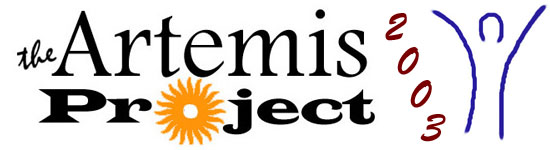

/ Copyright 2003 / The Artemis Project /

Artemis is designed to encourage young women in science and technology. The students will learn both concrete computer skills and abstract computer science concepts through a variety of projects and activities, in a positive and encouraging environment.
Click here for more information about Artemis.
We're currently looking for next year's Artemis Coordinators. Click here to apply.
/ Copyright 2003 / The Artemis Project /